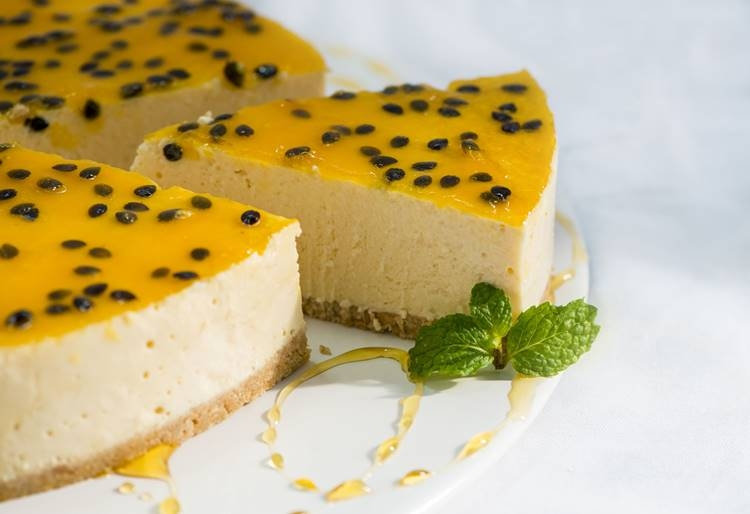

- Ingredientes
- Massa:
- 1 pacote de biscoito tipo maizena
- 1/2 xícara de chá de manteiga derretida
- Recheio:
- 500ml de creme de leite fresco
- 500g de chocolate meio amargo picado. Se preferir, use chocolate branco
- 1 envelope de gelatina incolor sem sabor
- 2 claras
- 4 colheres de sopa de açúcar
- Modo de Preparo
- Massa:
- 1. Bata os biscoitos no liquidificador até obter uma farinha. Numa tigela, junte a manteiga e a farinha de biscoitos. Misture com as mãos até obter uma massa uniforme.
- 2. Distribua a massa no fundo e na lateral de uma forma de aro removível, pressionando com os dedos. Leve ao forno médio preaquecido e asse por 10 minutos. Deixe esfriar antes de rechear.
- Recheio:
- 3. Aqueça o creme de leite no micro-ondas. Se preferir, leve ao fogo baixo somente até aquecer. Acrescente o chocolate e mexa até derreter completamente. Deixe esfriar.
- 4. a gelatina de molho em 3 colheres de sopa de água fria. Leve ao banho-maria até dissolver. Reserve.
- 5. Bata as claras com o açúcar até obter o ponto de neve. Misture ao creme de chocolate, mexendo delicadamente. Por último, adicione a gelatina dissolvida.
- 6. Coloque o recheio sobre a massa e leve à geladeira até firmar.